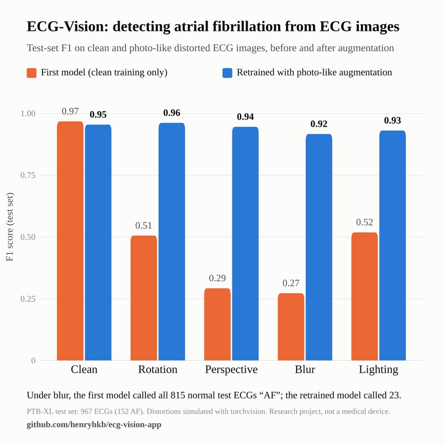

ECG-Vision
A ResNet-18 fine-tuned in PyTorch on 9,718 PTB-XL ECGs to detect atrial fibrillation from images. The first model failed badly on blurred and tilted images, so I retrained it with photo-like augmentation, then tested it on real iPhone photos and had a cardiologist review its mistakes blind.
0.95test F1 on 967 held-out ECGs
0.92–0.96F1 on distorted images, up from 0.27–0.52
6 of 7model “errors” a cardiologist agreed with
PyTorch, ResNet-18, data augmentation, PTB-XL, Gradio, Hugging Face Spaces
